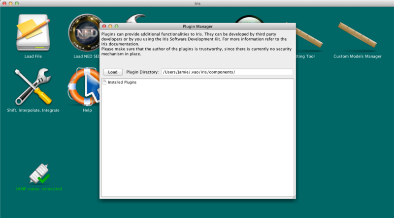
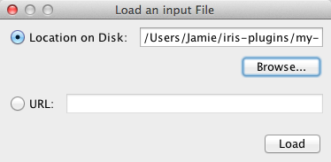
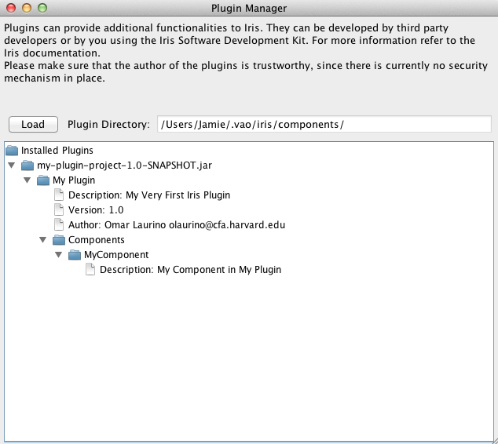
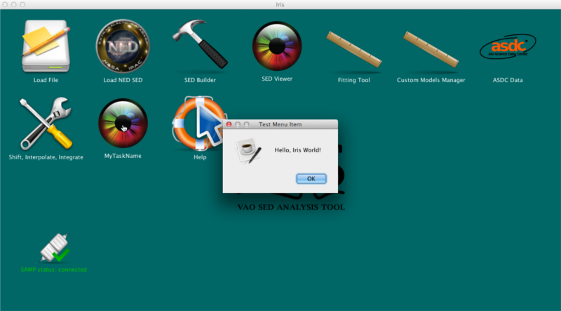

Iris plugins are external components that can add functionality to Iris. For example, the ASDC Data Center, one of the data retrieval engines in Iris, was a third-party plugin before Iris 2.0. Users may install third-party plugins into Iris, or create their own plugins. This thread explains how to install plugins into Iris.
A note on third-party plugins: Since they are developed independently of Iris, you shouldn’t expect the plugins to have the same quality standard of Iris. Also, plugins might have bugs that might impair the Iris functionality. Please make sure that you trust the plugin authors, since plugins can run arbitrary code on your system.
Last Update: 07 May 2015 - Updated for Iris 2.1 beta.
Installing the plugin is simple and straightforward. In order to install and uninstall plugins, you use the Iris Plugin Manager. This component is available from the Tools->Plugin Manager menu.

To install a jar file containing plugins you click on the Load button. A new window will allow you to either load a jar file from disk or provide a URL address to the jar file.

Click on Load to close the window and let Iris load the plugins included in the jar file. The plugin manager shows the list of installed plugins and their metadata:

Notice that a jar file can contain an arbitrary number of plugins, and each plugin can contribute any number of menus of buttons. Menus will be added to either the File menu or the Tools menu. The new buttons and menus should become available as soon as you install the plugin.
If we built the default Iris plugin and loaded it through the Plugin Manager, we see the “Test Component” desktop Icon appear. When we click on it, we get a new frame with our fun little message:

If you want to uninstall the plugins in a jar file, simply right-click on the name of the jar file and then click on “Remove”.
| [Back to top] |
| Date | Change |
|---|---|
| 27 Nov 2012 | created |
| 02 Oct 2013 | Added how to generate, develop and build custom plugins |
| 10 Oct 2013 | Moved generating, developing and building an Iris plugin to “Creating Iris Plugins” |
| 02 Dec 2013 | Updated for Iris 2.0.1 |
| 07 May 2015 | Updated for Iris 2.1 beta. |
| [Back to top] |